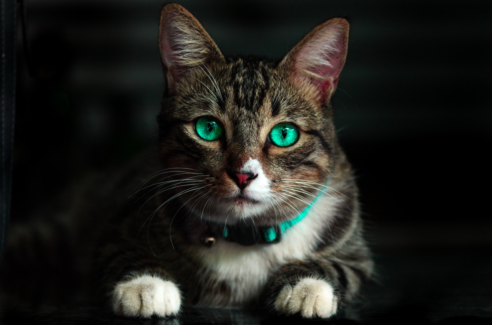
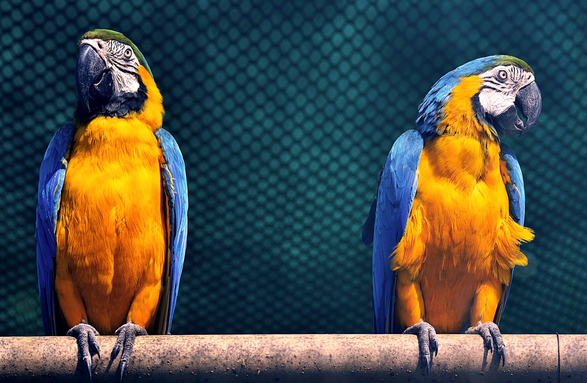
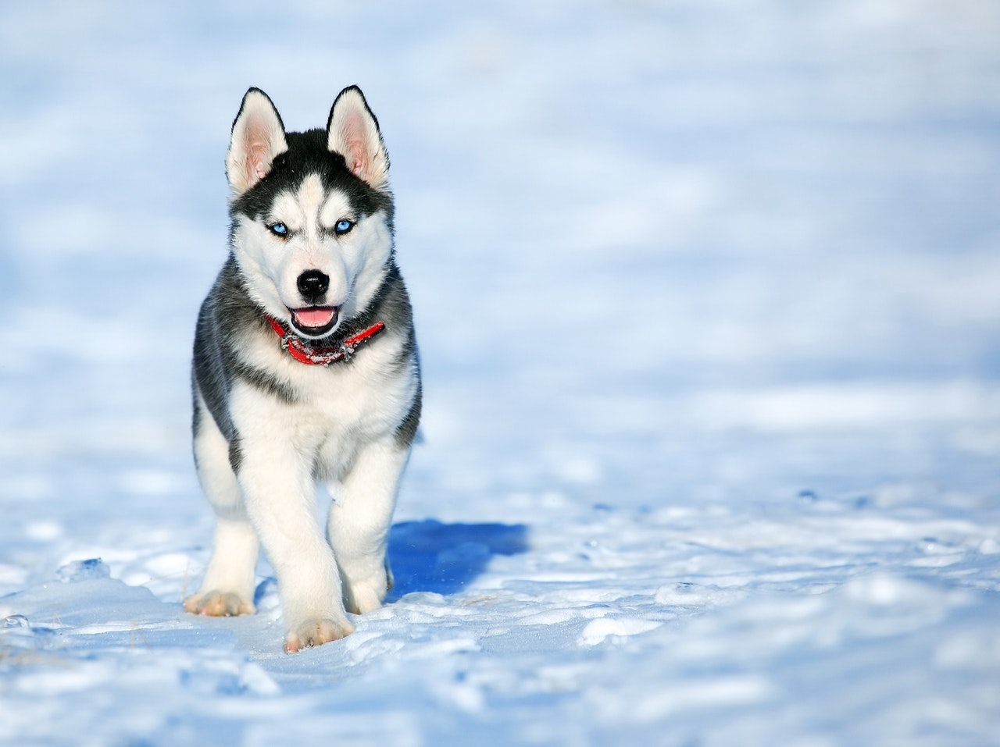
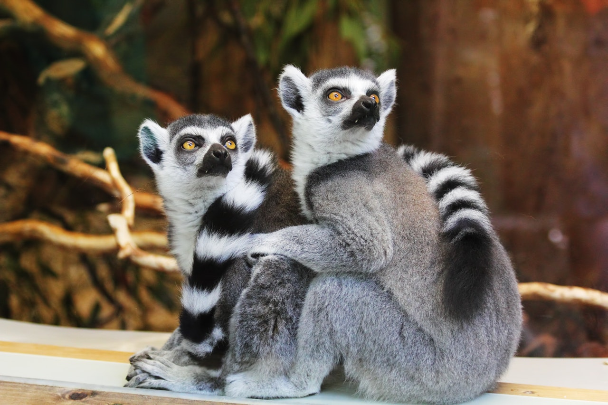
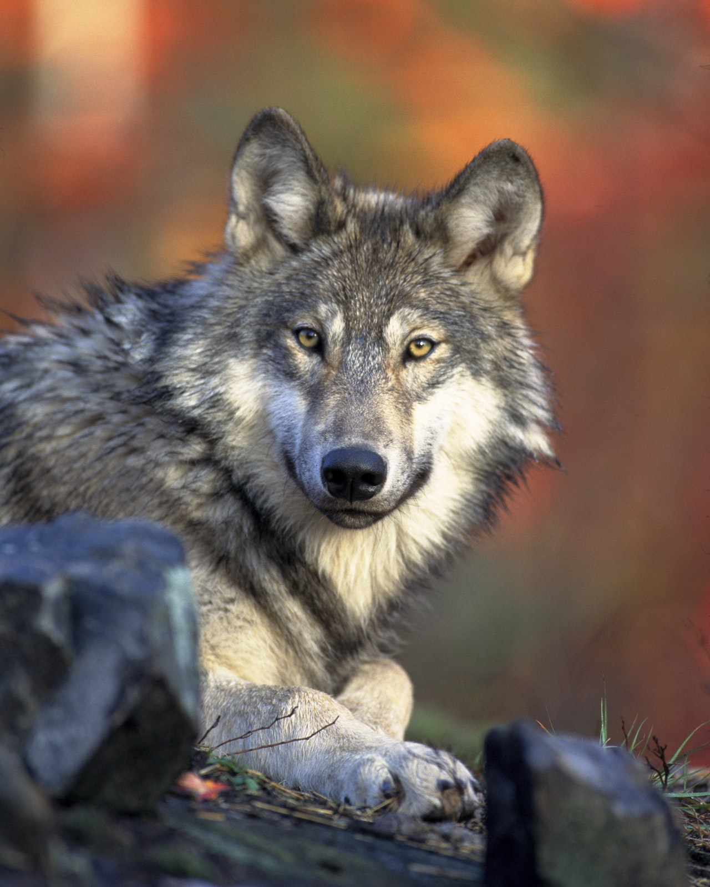
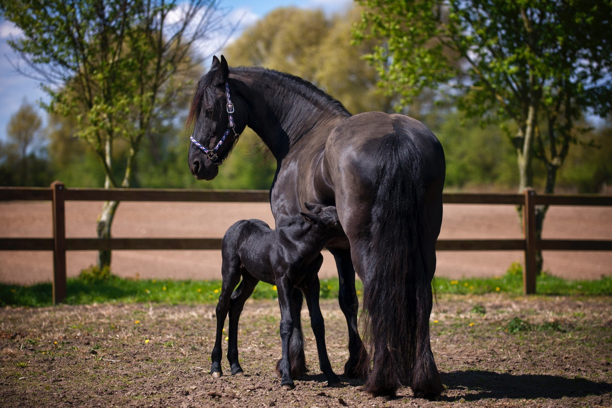

Acerca de nosotros
Soy estudiante de la Univercidad de Managua U.de.M y esta es una prueba de lo que puedo hacer para mejorar poco a poco espero que le guste...

Los gatos domésticos, sea cual sea su raza, son todos miembros de una misma especie, Felis catus.

La lapa es un ave muy selectiva en cuanto a lo que come y los árboles de almendro son de su predilección y los ideales para su alimentación.

El koala tiene una gran importancia dentro del ecosistema australiano. Durante millones de años ha sido clave para la salud de los bosques de eucalipto.

El husky siberiano es una raza de perro de trabajo originaria del noreste de Siberia.

Una población sana de zorros mantiene a raya a los roedores como a los ratones, ratas, topillos y a los topos.

Los venados son especies clave ya que forman parte de la cadena alimenticia y como herbívoro es dispersor de las semillas de diversas plantas de las cuales se alimenta.

Además, los lémures juegan un papel esencial en la salud y en la biodiversidad de los bosques que quedan en Madagascar mediante la dispersión de semillas y la polinización. Constituyen la típica especie clave en la isla.

El papel de los lobos en la naturaleza es clave para el ecosistema ¿por qué? Pues porque regulan la cantidad de especies herbívoras de los bosques, como ciervos y jabalís (aunque estos últimos son omnívoros)
Desde el inicio de sus labores, ha sido clave para combatir la delincuencia, detectar y controlar invasiones en los cerros de la ciudad y hacer presencia oportuna para evitar hechos delincuenciales en desarrollo.
eces tienen un importante papel en el ciclo de nutrientes de los ecosistemas marinos. ... A través de la excreción, ellos reciclan los nutrientes que toman, proveyendo los nutrientes que las praderas marinas y las algas necesitan para crecer.

La importancia de este animal es clave: ejercen influencia en la riqueza de especies o biodiversidad y en la heterogeneidad del paisaje

a importancia de este animal en la mitología sólo se explica por el crucial papel que jugó durante los albores de la civilización humana.
Como consumen muchos y muy variados insectos, esto hace que sean muy buenas para controlar las plagas que pueden dañar nuestros huertos o jardines.